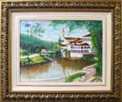

|
1)
Escolha o artista e clique no ícone da pintura ou no nome do
artista, para ver as telas.
|
 |
Felipe
Nicolau - |
Daniel
William Conrade
- |
Marlini
- |
Eliete
Santos Cham - |
Marcos
Nunes - |
| VOLTAR | 3D | HQ | PINTURAS | ARTE DIGITAL |